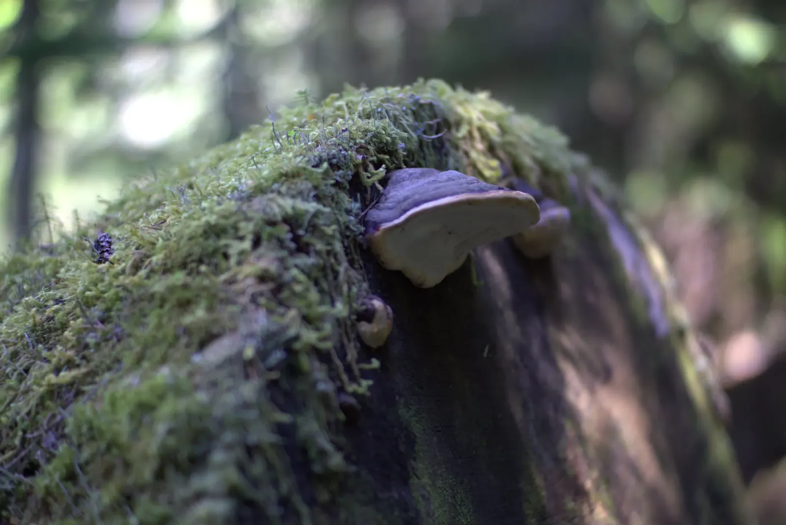

Late Thaw
The Alpine Lakes Wilderness has hundreds of lakes, and in late June the snowfields around them refused to quit. It stretches north from I-90 at Snoqualmie Pass, about an hour east of Seattle, and I spent three days and two nights hiking a loop through its southern end. I started in the city at Kerry Park, where Mount Rainier floats over the skyline, Space Needle and all, then headed east to Exit 47 and into the trees. The Pratt Lake trail climbs through old-growth forest where the trees wear so much moss that the whole place feels padded, and a creek stair-steps down beside it. That evening, at Olallie Lake, I set up a hammock under a tarp, with a strand of string lights between two giant trunks and the moon on its way up.
The moon came up full, and the lake was calm enough to give me a second one. It is hard to feel important with one moon above you and another at your feet. In the morning a ridge above the lake gave me Rainier again, a white dome over the fir boughs with Olallie shining blue below. From there the trail wound through a boulder field to a big blue lake, which I think was Pratt Lake, and on to Lower Tuscohatchie. Bleached logs lay half-sunk there in water so clear it hardly seemed to be there, and rugged peaks rose behind them, still streaked with snow.

Pack for snow if you do this loop in June. The calendar said summer, but on the climb to Melakwa the trail was buried in places, and the lake was still ringed with snow and ice when I got there. Melakwa comes from the Chinook Jargon word for mosquito, which sounds like a joke when the shoreline is buried in snow! I camped under jagged peaks that turned gold as the sun went down. On the last morning I followed Denny Creek downhill past Keekwulee Falls, where the creek plunged down a granite cliff in two tiers with a patch of snow still hanging above it. Lower down, the ferns were only just unfurling, and somewhere on the way out I walked from winter into spring.